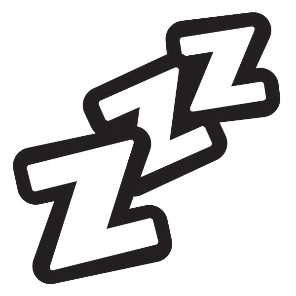

Cicatrizes
Guilherme Leão - 05/09/2019
Cicatrizes
Alguma maneira do mundo me ouvir.
ps: Talvez eu continue colocando as coisas que eu tinha deixado de lado aqui.
Continuaria se não fosse 00:15 e amanhã tivesse aula.
Lapsos
O mundo é melancolia
E eu sou refém indefeso
De toda a agonia presente
Nesse meio onde a catástrofe
Catástrofe que vem do nosso porto
Vem pra varrer todo meu sentimento todo
Dança dos Dias
Já não torço pra esse barco virar
E todo dia a vida insiste em me acordar
Me tirando da cama para escutar
As mesmas conversas
Tendo sempre o mesmo horário pra voltar
E eu volto
Com o mesmo sorriso no rosto
E tenho certeza
Dos pensamentos e Lembranças
Que eu sei que vivi
Cabelos Escuros
Como me segurar ou não me levar
Quando ao meio a chuva e o céu estrelado
Sentado, na frente da calçada cheia
Cheia de gente, gente como a gente
Me perco na profundidade
Dos cabelos negros que brilham
Brilham dentro da minha retina
Como a aurora clareia os polos
Esses cabelos escuros clareiam
O fogo que quando apagado
Me impedia de ter cor na vida
Réquiem
Ao ver o estíge nos meus sonhos
Penso se a estaca enfim ia chegar no seu destino
Seria essa a magnum opus da existência?
Como se no sonho, pudesse sentir
Que o canto do barqueiro
Seriam palavras que me acertariam
Acertariam pra levar o mundo embora
E fora do mundo eu fico
Fico nesse meio de almas
Almas sem recheio e sem cobertura
No lugar que vou ter que aprender
Aprender a conviver
E ser mais um